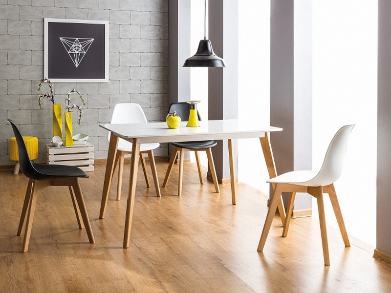

Stil
minimalist
Asociat cu celebra sintagmă atribuită arhitectului și designerului Mies van der Rohe, „Less is more”, minimalismul este un curent estetic în aparență auster, în care accentul este pus pe puritatea formelor și simplitatea liniilor. Apărut in anii ’60 ca o reacție la surplusul de culoare și detalii caracteristice formelor precedente de artă, fenomenul minimalismului a început să ia cu adevarat amploare un deceniu mai tarziu. În prezent, acest stil nu se aplică doar în designul interior sau în moda, ci a devenit chiar un stil de viață, promovat intens în toata lumea de doi autori americani: Joshua Fields Millburn și Ryan Nicodemus.
|  |
●Cele mai importante reguli ale stilului minimalist în designul interior
La prima vedere, ai putea crede că un decor minimalist e foarte ușor de obținut. Nu trebuie decât să elimini ornamentele, combinațiile de culori și aglomerările de obiecte, nu-i așa? Lucrurile, însă, stau puțin altfel, pentru că, atunci cand amenajam o încapere în stilul minimalist, nu trebuie să obținem un spațiu sobru, sărăcăcios și banal, ci unul perfect functional, care sa inspire calm și claritate.